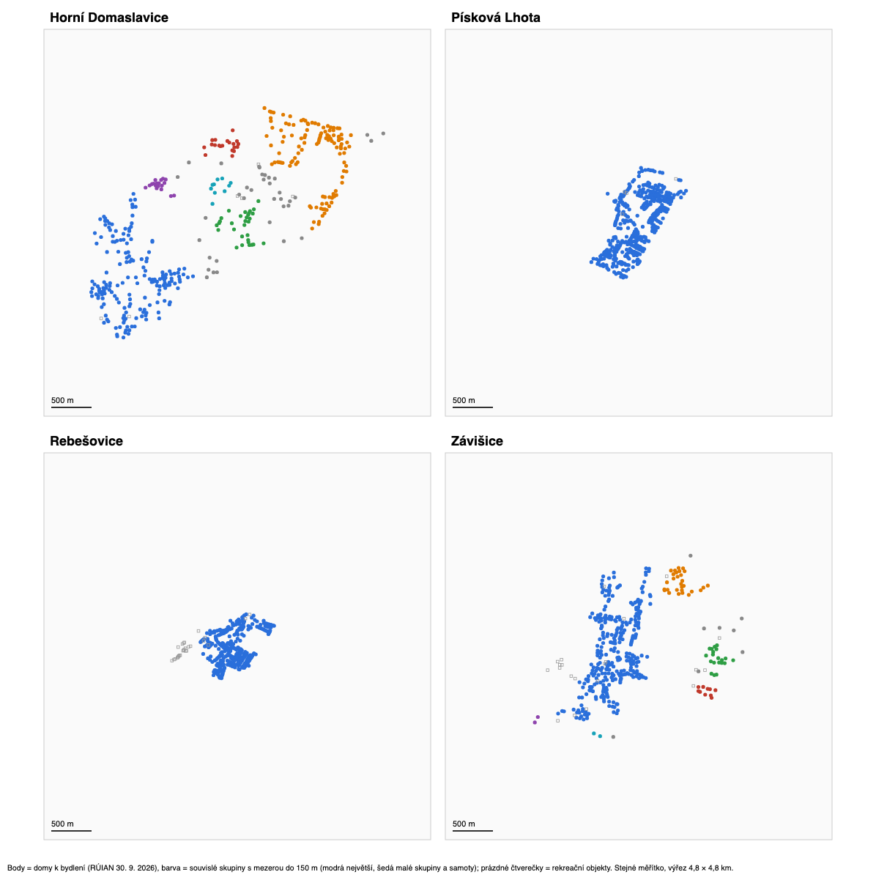

Roztříštěnost zástavby (podobné obce)
Stránka ukazuje, jestli domy v obci tvoří jedno souvislé sídlo, nebo několik oddělených částí, a jak dlouhá síť (cesty, vodovod, kanalizace) by musela být, aby propojila všechny domy. Metoda je stejná jako na stránce Roztříštěnost zástavby u sousedních obcí a vychází z polohy budov v registru RÚIAN (stav ke 30. 9. 2026).

Výsledky
| HD | Písková Lhota | Rebešovice | Závišice | |
|---|---|---|---|---|
| Domy k bydlení | 408 | 393 | 364 | 381 |
| Rekreační objekty | 6 | 4 | 27 | 21 |
| Podíl domů v největší skupině (mezera do 150 m) | 43 % | 100 % | 100 % | 81 % |
| Počet skupin aspoň s 5 domy (do 150 m) | 9 | 1 | 1 | 4 |
| Velikost největších skupin (do 150 m) | 174, 119, 31, 20, 18, 10 | 393 | 364 | 310, 29, 20, 10 |
| Podíl domů v největší skupině (do 100 m) | 16 % | 99 % | 100 % | 77 % |
| Samoty a dvojice (mezera nad 150 m) | 10 | 0 | 0 | 10 |
| Medián vzdálenosti domu od středu | 1 219 m | 382 m | 243 m | 490 m |
| 90 % domů do vzdálenosti | 1 768 m | 633 m | 453 m | 1 204 m |
| Medián vzdálenosti k nejbližšímu sousedovi | 40 m | 21 m | 11 m | 30 m |
| Nejkratší propojení všech domů | 25,1 km | 11,0 km | 6,8 km | 17,1 km |
| …na jeden dům | 61 m | 28 m | 19 m | 45 m |
| …z toho v úsecích delších než 150 m | 3,6 km (14 %) | 0 | 0 | 2,7 km (16 %) |
| Obálka zástavby (ha) | 192 | 78 | 46 | 126 |
| Domy na hektar obálky | 2,1 | 5,0 | 7,9 | 3,0 |
Co z toho plyne
- Písková Lhota a Rebešovice jsou jedno souvislé sídlo. Všechny domy tvoří při mezeře 150 m jednu skupinu a polovina domů je do 250–380 m od středu. Nová zástavba v obou obcích tvoří s původní vsí jeden celek.
- Závišice jsou údolní ves s několika osadami. Hlavní část má 81 % domů, k ní patří tři menší osady (29, 20 a 10 domů) a samoty.
- HD jsou ze čtyř obcí jednoznačně nejroztříštěnější. Největší část nemá ani polovinu domů a polovina domů je dál než 1,2 km od středu. Na jeden dům připadá 61 m nejkratšího propojení, dvakrát až třikrát víc než v Pískové Lhotě a Rebešovicích.
- Dopad na infrastrukturu: síť ke každému domu (kanalizace, vodovod) je v HD na dům výrazně delší než v podobných obcích. Proto jsou HD ve srovnání s nimi u kanalizace skutečně v horší výchozí pozici. Na silnice mezi částmi obce, chodníky, veřejné budovy nebo sportoviště ale tento rozdíl nemá takový vliv (viz souhrn).
Podobně roztříštěnou zástavbu jako HD mají ze sousedních obcí Vojkovice (největší část 36 % domů), viz Roztříštěnost zástavby.
Pozor
- Výsledky závisí na zvolené mezeře; tabulka uvádí i variantu se 100 m. HD jsou nejroztříštěnější při mezeře 75, 100 i 150 m.
- Nejkratší propojení počítá přímé spojnice. Skutečné cesty a sítě kopírují terén a jsou delší.
- „Střed“ zástavby je statistický střed rozmístění domů, ne náves ani obecní úřad.
Metodika a zdroje
Zdroj: RÚIAN, výměnný formát za obce (soubory OB_<kód>_UKSH na vdp.cuzk.gov.cz), stav ke 30. 9. 2026, definiční body stavebních objektů. Skupiny domů jsou shluky bodů s maximální mezerou 75, 100 a 150 m. Nejkratší propojení je minimální kostra nad body domů. Obálka zástavby je sjednocení kruhů o poloměru 50 m kolem všech domů. Rekreační objekty do výpočtů nevstupují. Data: podobne_obce_roztrisenost.csv.